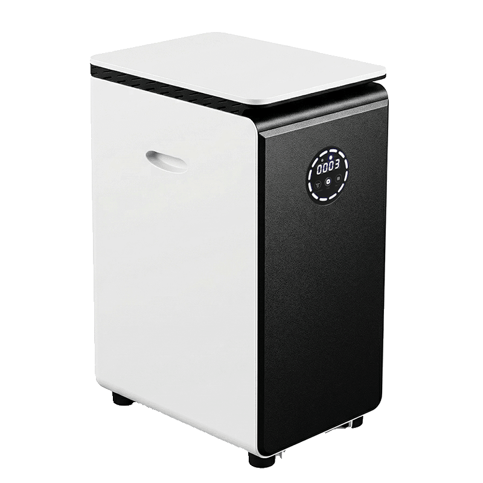

Review — GEME Bio partner
GEME Pro 19L: the biggest machine in the lineup
Same GEMEBrain control, same Kobold ecosystem, same Metal Ion Oxidation purification — in a 19 L chassis built for households of four and up. We verified the specs against the manufacturer’s live product page on Oct 27, 2026, and checked the two-year field reports before printing a number.
Disclosure: this page contains a GEME Bio partner link — we are an official GEME Bio affiliate partner, and if you buy through the link on this page we earn a commission. The link never changes a verdict. Full disclosure
One line: the Terra 2’s technology scaled up — 19 L chamber, 5 kg/day claim, monthly emptying for a family of five — at $899.99, the most expensive machine in the category. The field reports support it in direction; one long-term user’s real-world number is closer to 2 kg/day, which is why this is a 4.0, not a 5.
What it is
The GEME Pro is the top end of GEME’s countertop line: a 19 L continuous-feed bio-reactor that runs a self-replicating industrial-grade microbial ecosystem — GEME’s Kobold culture — under adaptive GEMEBrain control, with a permanent Metal Ion Oxidation system breaking down odor molecules instead of trapping them in a replaceable cartridge. It’s the same technology architecture as the Terra 2, in a chassis GEME sizes for households of four or more, with the category’s largest drum (19 L) and the only continuous-feed machine in the category rated for 5 kg of input per day.
It runs continuously rather than in batches — you feed it through the day, it digests around the clock, and GEME’s FAQ puts the emptying cadence at roughly every two months for a family of five. GEME states the energy draw is comparable to a laptop computer running in the background, and the machine runs at 40 decibels or quieter. The output is a moist, biologically active compost substrate — real compost base material, not a dried flake.
Full specs
| Chamber | 19 L, continuous feed (the largest drum in the category) |
|---|---|
| Throughput | 5 kg/day (GEME’s claim; see the field reports section for the real-world number) |
| Sized for | Households of 4+; family of five empties roughly every 2 months (GEME FAQ) |
| What goes in | Meat, dairy, and small bones (chicken, fish) on the same continuous feed as peels and grounds; GEME advises against large, dense bones (beef shank, pork shoulder) to protect the mechanicals |
| Microbial system | Kobold industrial-grade ecosystem — self-replicating, no refill needed (GEME) |
| Control | GEMEBrain adaptive monitoring |
| Odor control | Metal Ion Oxidation — decomposes odor molecules rather than trapping them in a cartridge |
| Dimensions | 66.5 cm tall · W320 × D455 mm (GEME spec table) |
| Weight | 19.5 kg — the heaviest machine we review; plan a permanent spot |
| Noise | ≤ 40 dB (GEME test conditions); long-term users report it working visibly harder than a fridge while staying quieter |
| Energy | Comparable to a laptop running in the background (GEME) |
| Cleaning | Deep clean every 6–12 months (GEME spec) |
| Output | Moist active compost substrate — dark, nutrient-rich, ready to use in the garden per GEME; the store FAQ also recommends mixing at the stated ratio when working it into soil |
| Price (US) | $899.99 Basic · $938.99 Plus · refurb $599.99 — verified Oct 27, 2026; periodic promos apply |
| Returns | 30-day money-back guarantee; free shipping to US, Canada, UK, EU |
| Consumables | $0 — permanent purification system, no per-cycle part |
Price verified on the live product page’s structured data (JSON-LD), Oct 27, 2026: Basic 110V $899.99, Plus 110V $938.99, Twin Deal (2 units) $1,699.99, Refurbished $599.99. New 220V variants were out of stock at verification time. The Basic/Plus configuration difference is detailed on the store page at checkout.
The three-year cost
The Pro is the most expensive sticker in the category — and the consumable line under it is still $0. GEME’s own published comparison runs the category math for the dehydrator camp: a typical $499 smart-bin-style composter costs ≈$1,099 over three years once ≈$60/quarter of filters is counted. Applied to the Pro: $899.99 + $0 = $899.99. That’s the cheapest three-year cost of any machine that takes meat — which is also why the sticker shock is where the argument is won or lost. (That three-year framing is GEME’s, the vendor making the case; we verify the $0 consumable side independently.)
What comes out of it
Not a flake. The Pro’s output is a biologically decomposed organic matter — a dark, moist, nutrient-dense substrate GEME calls a real compost base. The product page is direct: once the 19 L is full — for a family of five, roughly every two months — it’s ready to use in the garden, with the FAQ adding that it works into soil best at the recommended mixing ratio. For a household running four or more people, that’s a steady drum of substrate on a monthly or six-week cycle.
Compare that to the dehydrator camp, whose output is a dry, storable flake. The GEME substrate goes to the garden while it’s still active — which is a feature for gardeners and a limitation for anyone who wants to store the output for months. If “finished compost” means a bag in the garage, that’s a dehydrator job, and the comparison says so plainly.
Two years in the field
Our controlled test of the Pro is in progress. In the meantime, the product page carries customer reports from two-plus years of use, and they’re the best real-world data the category has. We’re printing them with their grain included:
The throughput number that matters
One long-term user puts their real-world feed at “comfortably handling about 2 kg” — well under the 5 kg/day claim, but in the same league as the Terra 2’s claimed 2 kg/day, in a machine GEME sizes for four or more people. That’s the number that should anchor your expectations, not the marketing peak.
The odor record
Multiple reports across two years describe no kitchen odor — one user notes the machine works visibly harder than their fridge while staying quieter, consistent with the ≤ 40 dB spec. The Metal Ion Oxidation system’s claim of decomposing odor molecules rather than trapping them is, so far, holding up in the field.
The maintenance report
One long-term user replaced a UV light component with a part support sent — a DIY swap, resolved by the brand. Separately, one report documents a unit failing after two years of heavy use, with the user’s account of customer-service recovery included. Over two years and a family-scale user base, one failure is a small number; we’re printing it because “it’s a machine, and machines fail” is the honest frame, and because the 30-day money-back guarantee covers the front end.
All field reports above are customer accounts published on GEME’s store page, not Compost Culture measurements. They’re directional, and we’re treating them that way.
Pros and cons
- The 19 L chamber is the largest in the category — a family of five empties roughly every two months (GEME FAQ)
- Meat, dairy, and small bones on the same continuous feed as everything else — no sorting ritual, no “check the exclusions” list
- 5 kg/day claimed throughput; real-world field reports cluster around 2 kg — still the highest-ceiling machine here
- ≤ 40 dB and a laptop-class energy draw, per GEME; long-term users confirm the quiet end
- 6–12-month deep-clean cadence, $0 consumables — the cheapest three-year cost of any meat-capable machine ($899.99 all-in)
- Output is a moist, active compost substrate — real garden material, not a flake you have to rework
- 30-day money-back guarantee and free shipping to US, Canada, UK, EU
- Cons: $899.99 is the most expensive machine in the category — for under three people the Terra 2 covers most of the job at $699
- Cons: 19.5 kg — heaviest here; it lives in one place
- Cons: the 5 kg/day figure is a marketing peak; the field reports say to expect ~2 kg/day
- Cons: large dense bones (beef shank, pork shoulder) should be avoided — a real restriction for some households
- Cons: one documented two-year failure and one UV light replacement in the field reports — acceptable for the price band, worth knowing
Pro 19L vs. Terra 2: which GEME
| Spec | Terra 2 | Pro |
|---|---|---|
| Chamber | 14 L | 19 L (continuous) |
| Throughput | 2 kg/day (claimed) | 5 kg/day (claimed) |
| Sized for | 1–3 people | 4+ people |
| Weight | 13 kg | 19.5 kg |
| Footprint | 297 × 437 mm | W320 × D455 mm |
| Noise | ≤ 35–40 dB | ≤ 40 dB |
| Cleaning | 3–6 months | 6–12 months |
| Sticker | $699 | $899.99 |
| Best for | Small households, tight counters | 4+ people, heavy daily scraps |
The decision is household size and counter real estate, not technology — the control, ecosystem, and purification architecture is the same. The full six-machine picture is in the head-to-head.
FAQ
Will it smell?
Two years of field reports on the product page say no: the Metal Ion Oxidation system decomposes odor molecules rather than trapping them in a cartridge, and long-term users describe the machine as quieter than their fridge. It runs at ≤ 40 dB in GEME’s test conditions — for reference, a quiet library is about 40 dB.
Can it handle meat and bones?
Meat and dairy: yes, on the same continuous feed as everything else. Small bones (chicken, fish): yes. Large dense bones (beef shank, pork shoulder): GEME advises against them to protect the mechanicals. That last line is a real restriction — if your household runs a lot of large bone-in cuts, size for it.
How often do I empty it?
GEME’s FAQ: roughly every two months for a family of five feeding a 19 L chamber. A smaller household feeding less will stretch that further; a family of six or seven feeding the claimed 5 kg/day will be closer to monthly.
How is it different from the Reencle?
Three ways. The Pro takes meat and dairy; the Reencle doesn’t. The Pro runs continuously and produces a moist active substrate; the Reencle runs ≈150-minute batches and produces a dry, storable flake. And the Reencle’s $699 is a fairer price for a 1–3-person household — the Pro’s $899.99 is a family-of-four-and-up purchase.
What does “Plus” mean in the variants?
The store lists Basic at $899.99 and Plus at $938.99 — a $39.99 step whose configuration difference is detailed on the store page at checkout. At verification time (Oct 27, 2026) the 110V Basic and Plus were in stock; the new 220V variants and the 110V refurb ($599.99) were not.